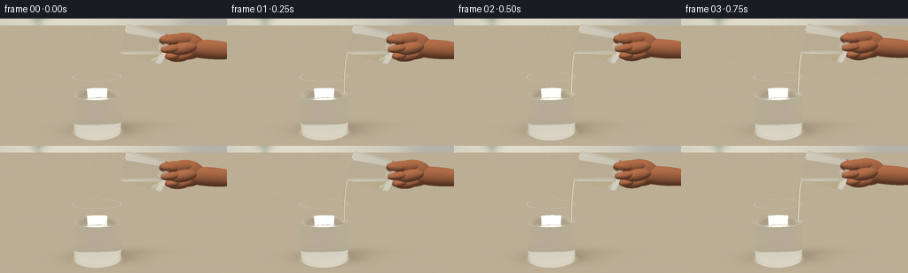
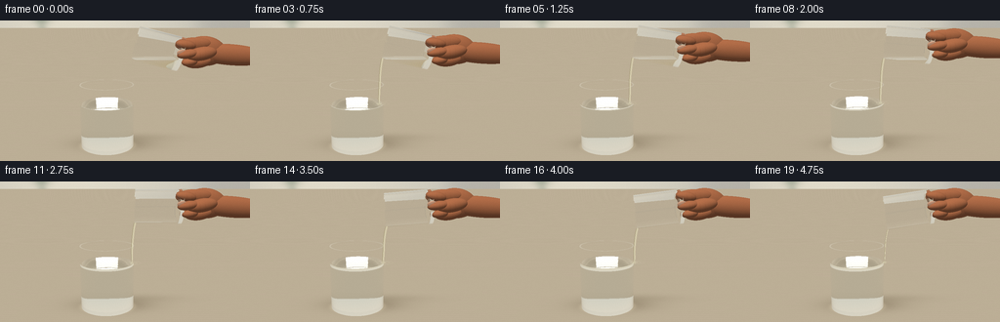
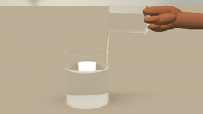

CODING AGENTS AS PIXEL WORLD MODELS
traex/GPT-6.1-Sol · material_0023
点击播放 · 原生 RGB 像素
逐轮保存的候选
回放视频、检查图与代码变化。
每份候选均可单独播放。实际图片检查记录在下方工具轨迹中。
候选 01播放与检查图
点击播放 · 原生 RGB 像素


展开代码变化
--- 上一保存版本
+++ 本次保存版本
@@ -0,0 +1,273 @@
+"""Procedural, numpy-only optical scene: two glass tumblers and a gentle pour."""
+from pathlib import Path
+import math
+import numpy as np
+from PIL import Image, ImageDraw, ImageFilter
+from artifact_io import save
+
+ROOT=Path(__file__).resolve().parent
+W,H=256,144
+SS=3
+SW,SH=W*SS,H*SS
+DT=np.float32
+
+def normalize(v):
+ return v/np.maximum(np.linalg.norm(v,axis=-1,keepdims=True),1e-12)
+
+def dot(a,b): return np.sum(a*b,axis=-1)
+
+def smooth(t): return t*t*(3-2*t)
+
+cam=np.array([0.,4.15,9.5],dtype=DT)
+target=np.array([0.,2.02,0.],dtype=DT)
+fwd=normalize(target-cam); right=normalize(np.cross(fwd,[0,1,0])).astype(DT); up=np.cross(right,fwd)
+focal=SH/(2*np.tan(np.radians(28.2)/2))
+xx,yy=np.meshgrid(np.arange(SW)+.5,np.arange(SH)+.5)
+raydirs=normalize(fwd[None,None,:]+right[None,None,:]*(xx[...,None]-SW/2)/focal-up[None,None,:]*(yy[...,None]-SH/2)/focal).reshape(-1,3).astype(DT)
+
+def project(p):
+ q=np.array(p)-cam; dep=dot(q,fwd)
+ return (SW/2+focal*dot(q,right)/dep,SH/2-focal*dot(q,up)/dep)
+
+# All scenery is made from elementary analytic fields, not external images.
+def environment(o,d):
+ # Matte limestone table, with subtle wood-like grain.
+ tt=-o[:,1]/np.where(abs(d[:,1])>1e-8,d[:,1],1e-8)
+ floor=(d[:,1]<-.0001)&(tt>0)
+ p=o+np.clip(tt,0,100)[:,None]*d
+ wallt=(-4-o[:,2])/np.where(abs(d[:,2])>1e-8,d[:,2],1e-8)
+ q=o+np.clip(wallt,-100,100)[:,None]*d
+ x,y=q[:,0],q[:,1]
+ light=np.exp(-((x+2.4)/4.6)**2-((y-4)/5)**2)
+ rgb=np.column_stack([.78+.105*light,.767+.096*light,.718+.078*light])
+ # Soft focus kitchen verticals and a distant small leafy plant.
+ cabinet=1/(1+np.exp(np.clip(-(x-3.4)*4,-30,30)))
+ rgb-=cabinet[:,None]*np.array([.075,.072,.058])
+ for lx,ly,sx,sy in [(-4.1,2.7,.42,.6),(-3.75,3.3,.40,.25),(-4.55,3.7,.53,.20),(-3.9,4.0,.25,.42),(-4.5,2.55,.55,.18),(-4.4,3.15,.21,.5),(-3.9,4.5,.42,.18)]:
+ b=np.exp(-((x-lx)/sx)**2-((y-ly)/sy)**2)
+ rgb-=b[:,None]*np.array([.15,.12,.125])
+ # A broad window and narrow white strip lights reflected in the glass.
+ front=d[:,2]>.05
+ tf=(5.5-o[:,2])/np.maximum(d[:,2],.001)
+ fp=o+np.clip(tf,0,200)[:,None]*d
+ win=np.exp(-((fp[:,0]+3.5)/1.3)**8-((fp[:,1]-3)/3.8)**8)
+ strip=np.exp(-((fp[:,0]-3.7)/.29)**6-((fp[:,1]-3)/4.)**6)
+ fr=np.tile(np.array([.58,.565,.535]),(len(o),1))
+ fr+=win[:,None]*np.array([.4,.41,.42])+strip[:,None]*np.array([.33,.335,.34])
+ rgb=np.where(front[:,None],fr,rgb)
+ # floor shadows / luminous refracted contact rings
+ px,pz=p[:,0],p[:,2]
+ grain=.0035*np.sin(42*pz+3*np.sin(px*.7))+.002*np.sin(90*pz+.8*np.sin(px*2))
+ grain*=np.exp(-np.maximum(pz,0)*.4)
+ base=np.column_stack([.74+grain,.687+grain,.591+grain])
+ shad=.15*np.exp(-((px+.4)/1.26)**2-((pz+.1)/.55)**2)
+ shad+=.052*np.exp(-((px-.35)/1.65)**2-((pz+.72)/.4)**2)
+ r=np.sqrt(((px+.62)/.94)**2+(pz/.7)**2)
+ caustic=.06*np.exp(-((r-1)/.11)**2)
+ base-=shad[:,None];base+=caustic[:,None]*np.array([1,.97,.85])
+ rgb=np.where(floor[:,None],base,rgb)
+ return np.clip(rgb,0,1).astype(DT)
+
+class Glass:
+ def __init__(self,b,axis,h,r,thick=.055):
+ self.b=np.array(b,dtype=DT);self.a=normalize(np.array(axis,dtype=DT));self.h=h;self.r=r;self.ri=r-thick;self.bt=.12
+ def coords(self,p):
+ q=p-self.b; v=dot(q,self.a); radial=q-v[:,None]*self.a
+ return v,dot(radial,radial)
+ def hits(self,o,d,best,norm,labels,idx):
+ q=o-self.b;qy=dot(q,self.a);dy=dot(d,self.a)
+ qr=q-qy[:,None]*self.a;dr=d-dy[:,None]*self.a
+ A=dot(dr,dr);B=dot(qr,dr);C=dot(qr,qr)
+ for radius,lo,sgn in [(self.r,0,1),(self.ri,self.bt,-1)]:
+ disc=B*B-A*(C-radius*radius)
+ rt=np.sqrt(np.maximum(0,disc));den=np.maximum(A,1e-12)
+ for t in [(-B-rt)/den,(-B+rt)/den]:
+ v=qy+t*dy
+ good=(disc>=0)&(t>1e-4)&(t<best)&(v>=lo)&(v<=self.h)
+ ids=np.flatnonzero(good)
+ if len(ids):
+ best[ids]=t[ids];norm[ids]=(qr[ids]+t[ids,None]*dr[ids])/radius*sgn;labels[ids]=idx
+ for height,normal,rin,rout in [(0,-1,0,self.r),(self.bt,1,0,self.ri),(self.h,1,self.ri,self.r)]:
+ t=(height-qy)/np.where(abs(dy)>1e-10,dy,1e-10)
+ rr=qr+t[:,None]*dr;r2=dot(rr,rr)
+ good=(t>1e-4)&(t<best)&(r2>=rin**2)&(r2<=rout**2)
+ ids=np.flatnonzero(good)
+ best[ids]=t[ids];norm[ids]=self.a*normal;labels[ids]=idx
+ def liquid_surface(self,o,d,best,norm,labels,level,idx,wavy=0):
+ # Horizontal hydrostatic oil/water surface.
+ t=(level-o[:,1])/np.where(abs(d[:,1])>1e-9,d[:,1],1e-9)
+ p=o+t[:,None]*d;v,r2=self.coords(p)
+ good=(t>1e-4)&(t<best)&(v>=self.bt)&(v<=self.h)&(r2<self.ri**2)
+ ids=np.flatnonzero(good)
+ if len(ids):
+ best[ids]=t[ids];norm[ids]=[0,1,0];labels[ids]=idx
+ if wavy:
+ dx=p[ids,0]-.14; dz=p[ids,2]-.03
+ rr=np.sqrt(dx*dx+dz*dz)+1e-6
+ k=35; amp=wavy*np.cos(rr*k-timeval*7)*np.exp(-rr*2.7)
+ norm[ids]=normalize(np.column_stack([-amp*dx/rr,np.ones(len(ids)),-amp*dz/rr]))
+
+class Ellipsoid:
+ def __init__(self,c,s,color,rot=0):
+ self.c=np.array(c,dtype=DT);self.s=np.array(s,dtype=DT);self.color=np.array(color,dtype=DT)
+ co,si=np.cos(rot),np.sin(rot);self.R=np.array([[co,-si,0],[si,co,0],[0,0,1]],dtype=DT)
+ def hits(self,o,d,best,norm,labels,idx):
+ q=(o-self.c)@self.R/self.s; dr=d@self.R/self.s
+ A=dot(dr,dr);B=dot(q,dr);C=dot(q,q)-1
+ disc=B*B-A*C;t=(-B-np.sqrt(np.maximum(0,disc)))/A
+ good=(disc>=0)&(t>1e-4)&(t<best)
+ ids=np.flatnonzero(good)
+ if len(ids):
+ best[ids]=t[ids];local=q[ids]+t[ids,None]*dr[ids]
+ norm[ids]=normalize((local/self.s)@self.R.T);labels[ids]=idx
+
+receiver=Glass([-.63,.045,0],[0,1,0],2.20,.94,.052)
+
+# The hand is mostly cropped: shaded palm and three connected finger segments.
+def make_hand(shift):
+ sk=[.70,.431,.287]
+ return [
+ Ellipsoid([3.65,3.38+shift,-.19],[1.4,.36,.34],sk,-.08),
+ Ellipsoid([2.75,3.50+shift,-.25],[.73,.51,.37],sk,-.10),
+ Ellipsoid([2.31,3.74+shift,-.05],[.62,.235,.22],sk,.03),
+ Ellipsoid([1.99,3.74+shift,.20],[.34,.16,.22],sk,-.15),
+ Ellipsoid([2.43,3.17+shift,.13],[.45,.21,.28],sk,.10),
+ Ellipsoid([2.11,3.20+shift,.36],[.26,.145,.23],sk,.12),
+ Ellipsoid([2.46,3.47+shift,.45],[.49,.22,.27],sk,.17),
+ Ellipsoid([2.01,3.47+shift,.52],[.35,.145,.22],sk,.15),
+ Ellipsoid([1.80,3.52+shift,.59],[.155,.095,.046],[.78,.59,.475],.12),
+ ]
+
+def medium(p,source,level,oilheight):
+ n=np.ones(len(p),dtype=DT);absor=np.zeros_like(p)
+ for g,isrc in [(receiver,False),(source,True)]:
+ v,r2=g.coords(p)
+ inside=(v>=g.bt)&(v<=g.h)&(r2<g.ri*g.ri)
+ if isrc:
+ oil=inside&(p[:,1]<=level)
+ n[oil]=1.445;absor[oil]=[.025,.038,.115]
+ else:
+ wat=inside&(p[:,1]<=1.57)
+ oil=inside&(p[:,1]>1.57)&(p[:,1]<=1.57+oilheight)
+ n[wat]=1.333;absor[wat]=[.018,.008,.004]
+ n[oil]=1.445;absor[oil]=[.025,.038,.115]
+ shell=(v>=0)&(v<=g.h)&(r2<=g.r*g.r)&((r2>=g.ri*g.ri)|(v<=g.bt))
+ n[shell]=1.49;absor[shell]=[.014,.009,.006]
+ return n,absor
+
+def trace(source,level,oilheight,hand,wave):
+ o=np.tile(cam,(len(raydirs),1));d=raydirs.copy();out=np.zeros_like(o);weight=np.ones_like(o);pix=np.arange(len(o))
+ for bounce in range(12):
+ if len(o)==0: break
+ n1,absorb=medium(o,source,level,oilheight)
+ dist=np.full(len(o),1e8,dtype=DT);norm=np.zeros_like(o);label=np.full(len(o),-1,dtype=np.int16)
+ receiver.hits(o,d,dist,norm,label,0);source.hits(o,d,dist,norm,label,1)
+ receiver.liquid_surface(o,d,dist,norm,label,1.57,2,wave)
+ if oilheight>.001: receiver.liquid_surface(o,d,dist,norm,label,1.57+oilheight,3,wave)
+ source.liquid_surface(o,d,dist,norm,label,level,4)
+ for j,obj in enumerate(hand):obj.hits(o,d,dist,norm,label,10+j)
+ # Opaque tabletop.
+ t=-o[:,1]/np.where(abs(d[:,1])>1e-9,d[:,1],1e-9)
+ hits=(t>1e-4)&(t<dist);dist[hits]=t[hits];label[hits]=5;norm[hits]=[0,1,0]
+ miss=label<0
+ if np.any(miss):out[pix[miss]]+=weight[miss]*environment(o[miss],d[miss])
+ hit=~miss
+ if not np.any(hit):break
+ o,d,dist,norm,label,n1,absorb,weight,pix=[a[hit] for a in [o,d,dist,norm,label,n1,absorb,weight,pix]]
+ p=o+dist[:,None]*d;weight*=np.exp(-absorb*dist[:,None])
+ opaque=label>=5
+ for mat in np.unique(label[opaque]):
+ m=label==mat
+ if mat==5:
+ clr=environment(o[m],d[m])
+ else:
+ obj=hand[mat-10];nn=norm[m]
+ lighting=.49+.54*np.maximum(0,dot(nn,normalize(np.array([-3,6,5],dtype=DT))))
+ lighting+=.09*np.maximum(0,dot(nn,normalize(np.array([4,3,-2],dtype=DT))))
+ pp=p[m];texture=.007*np.sin(pp[:,0]*190+np.sin(pp[:,1]*115))*np.sin(pp[:,1]*220+pp[:,2]*63)
+ # Natural short crease lines at finger joints.
+ creases=np.exp(-(np.sin((pp[:,0]-1.98)*19+pp[:,1]*1.6)/.13)**2)*np.exp(-((pp[:,0]-2.18)/.36)**2)
+ tex=texture-.035*creases*(np.maximum(nn[:,2],0)**3)
+ clr=np.clip(obj.color[None,:]*lighting[:,None]+tex[:,None],0,1)
+ if mat==18:
+ clr+=.12*np.maximum(0,dot(nn,normalize(np.array([-2,6,5],dtype=DT))))[:,None]**18
+ out[pix[m]]+=weight[m]*clr
+ keep=~opaque
+ if not np.any(keep):break
+ p,d,norm,n1,weight,pix=[a[keep] for a in [p,d,norm,n1,weight,pix]]
+ # Cross-boundary indices handle glass-to-water and glass-to-oil refraction.
+ n2,_=medium(p+d*3e-4,source,level,oilheight)
+ flip=dot(norm,d)>0;norm[flip]*=-1
+ cosi=np.clip(-dot(norm,d),0,1);eta=n1/n2
+ k=1-eta*eta*(1-cosi*cosi)
+ f0=((n1-n2)/(n1+n2))**2
+ fres=f0+(1-f0)*(1-cosi)**5
+ tir=k<0;fres[tir]=1
+ refl=d+2*cosi[:,None]*norm
+ out[pix]+=weight*fres[:,None]*environment(p+norm*.001,refl)
+ refr=eta[:,None]*d+(eta*cosi-np.sqrt(np.maximum(0,k)))[:,None]*norm
+ weight*=1-fres[:,None]
+ active=(np.max(weight,axis=1)>.002)&(~tir)
+ o=p[active]+refr[active]*.0005;d=normalize(refr[active]);weight=weight[active];pix=pix[active]
+ if len(o):out[pix]+=weight*environment(o,d)
+ return np.clip(out.reshape(SH,SW,3),0,1)
+
+# Pixel-space stream is a transparent refractive tube with edge highlights.
+def add_pour(rgb,lip,t,strength,oilheight):
+ img=Image.fromarray(np.uint8(np.clip(rgb,0,1)*255)).convert('RGBA')
+ if strength<.01:return img
+ sx,sy=project(lip)
+ landing=np.array([lip[0]-.105,1.57+oilheight,.14])
+ ex,ey=project(landing)
+ n=80;points=[];widths=[]
+ for k in range(n):
+ u=k/(n-1)
+ x=sx+(ex-sx)*(1-np.exp(-3*u))/(1-np.exp(-3))
+ x+=.19*SS*np.sin(u*10-t*5)*u
+ y=sy+(ey-sy)*u
+ points.append((x,y));widths.append(SS*(.97-.2*u)*strength)
+ left=[(x-w,y) for (x,y),w in zip(points,widths)]
+ rightside=[(x+w,y) for (x,y),w in zip(points,widths)]
+ layer=Image.new('RGBA',img.size);dr=ImageDraw.Draw(layer)
+ dr.polygon(left+rightside[::-1],fill=(210,203,158,97))
+ dr.line(left,fill=(127,119,76,120),width=max(1,SS//2))
+ dr.line([(x+.12*SS,y) for x,y in points],fill=(255,252,229,175),width=max(1,SS//2))
+ dr.line(rightside,fill=(250,244,200,165),width=max(1,SS//3))
+ # Landing: thin transparent rings flatten across the water surface.
+ for j in range(3):
+ phase=(t*1.45+j/3)%1
+ rad=(2.0+phase*10.7)*SS
+ alpha=int(75*(1-phase)*strength)
+ dr.ellipse((ex-rad,ey-rad*.22,ex+rad,ey+rad*.22),outline=(255,250,214,alpha),width=max(1,SS//2))
+ dr.arc((ex-rad,ey-rad*.22+.8*SS,ex+rad,ey+rad*.22+.8*SS),10,170,fill=(118,128,115,int(alpha*.55)),width=max(1,SS//3))
+ dr.ellipse((ex-1.9*SS,ey-.6*SS,ex+1.9*SS,ey+.7*SS),fill=(234,232,192,85))
+ return Image.alpha_composite(img,layer)
+
+frames=[]
+for i in range(20):
+ timeval=i/4
+ # Smooth and restrained wrist motion, followed by a tapering pour.
+ t=i/19; tilt=np.radians(76+23*smooth(t))
+ basey=3.27+.30*smooth(min(t*1.8,1))
+ base=np.array([1.88+.018*np.sin(t*2.3),basey,-.10],dtype=DT)
+ axis=np.array([-np.sin(tilt),np.cos(tilt),0],dtype=DT)
+ source=Glass(base,axis,1.56,.585,.048)
+ rim=base+axis*source.h
+ # Lowest point of the circular pouring rim.
+ downward=np.array([0,-1,0],dtype=DT); low=normalize(downward-axis*dot(downward,axis))
+ lip=rim+low*source.ri;lip[2]=.01
+ level=float(lip[1]+.018-.014*t)
+ flow=smooth(min(i/2.0,1))* (1-.68*smooth(max(0,(i-16)/3)))
+ oilheight=.007+.102*smooth(t)
+ wave=.045*flow
+ rgb=trace(source,level,oilheight,make_hand(basey-3.4),wave)
+ image=add_pour(rgb,lip,timeval,flow,oilheight).convert('RGB').resize((W,H),Image.Resampling.LANCZOS)
+ # Fine photographic grain held fixed to avoid frame flicker.
+ arr=np.asarray(image).astype(np.float32)
+ rng=np.random.default_rng(41);grain=rng.normal(0,.33,(H,W,1))
+ arr=np.clip(arr+grain,0,255).astype(np.uint8)
+ frames.append(arr)
+ print(f'frame {i+1}/20',flush=True)
+frames=np.stack(frames)
+save(frames,ROOT)
+print('Saved RGB video and preview artifacts.',flush=True)
候选 02播放与检查图
点击播放 · 原生 RGB 像素

展开代码变化
--- 上一保存版本
+++ 本次保存版本
@@ -19,9 +19,9 @@
def smooth(t): return t*t*(3-2*t)
cam=np.array([0.,4.15,9.5],dtype=DT)
-target=np.array([0.,2.02,0.],dtype=DT)
+target=np.array([0.,2.14,0.],dtype=DT)
fwd=normalize(target-cam); right=normalize(np.cross(fwd,[0,1,0])).astype(DT); up=np.cross(right,fwd)
-focal=SH/(2*np.tan(np.radians(28.2)/2))
+focal=SH/(2*np.tan(np.radians(31.0)/2))
xx,yy=np.meshgrid(np.arange(SW)+.5,np.arange(SH)+.5)
raydirs=normalize(fwd[None,None,:]+right[None,None,:]*(xx[...,None]-SW/2)/focal-up[None,None,:]*(yy[...,None]-SH/2)/focal).reshape(-1,3).astype(DT)
@@ -53,7 +53,7 @@
win=np.exp(-((fp[:,0]+3.5)/1.3)**8-((fp[:,1]-3)/3.8)**8)
strip=np.exp(-((fp[:,0]-3.7)/.29)**6-((fp[:,1]-3)/4.)**6)
fr=np.tile(np.array([.58,.565,.535]),(len(o),1))
- fr+=win[:,None]*np.array([.4,.41,.42])+strip[:,None]*np.array([.33,.335,.34])
+ fr+=win[:,None]*np.array([.25,.265,.28])+strip[:,None]*np.array([.33,.335,.34])
rgb=np.where(front[:,None],fr,rgb)
# floor shadows / luminous refracted contact rings
px,pz=p[:,0],p[:,2]
@@ -212,9 +212,66 @@
if len(o):out[pix]+=weight*environment(o,d)
return np.clip(out.reshape(SH,SW,3),0,1)
+def glass_accents(rgb,source,level,oilheight,t):
+ img=Image.fromarray(np.uint8(np.clip(rgb,0,1)*255)).convert('RGBA')
+ layer=Image.new('RGBA',img.size); dr=ImageDraw.Draw(layer)
+ def circle(g,h,r=None):
+ a=g.a
+ u=normalize(np.cross(a,[0,0,1]));v=np.cross(a,u)
+ return [project(g.b+a*h+(g.r if r is None else r)*(np.cos(ang)*u+np.sin(ang)*v)) for ang in np.linspace(0,2*np.pi,181)]
+ def line(points,color,width=.3):dr.line(points,fill=color,width=max(1,round(width*SS)),joint='curve')
+ # Clear water surface, with a separate pale gold oil film that slowly deepens.
+ center=receiver.b.copy();center[1]=1.57+oilheight
+ rim=[project(center+np.array([receiver.ri*np.cos(a),0,receiver.ri*np.sin(a)])) for a in np.linspace(0,2*np.pi,181)]
+ dr.polygon(rim,fill=(205,221,217,27))
+ line(rim,(152,169,159,93),.35)
+ oilalpha=int(12+38*t)
+ dr.polygon(rim,fill=(247,229,152,oilalpha))
+ line(rim[:91],(252,244,199,135),.45)
+ # A transparent meniscus visible against the distant kitchen.
+ for g,src in [(receiver,False),(source,True)]:
+ bottom=circle(g,.04);top=circle(g,g.h)
+ xs=np.array([p[0] for p in top]);imin=int(np.argmin(xs));imax=int(np.argmax(xs))
+ if src:
+ # Tangents along the tilted cylinder, and the circular open pouring mouth.
+ for idx in [imin,imax]:
+ line([bottom[idx],top[idx]],(110,125,120,108),.43)
+ off=.6*SS if idx==imin else -.6*SS
+ line([(bottom[idx][0]+off,bottom[idx][1]),(top[idx][0]+off,top[idx][1])],(255,255,246,175),.55)
+ line(bottom,(240,247,240,148),.70)
+ line(top,(126,143,131,124),.50)
+ line(top[70:165],(255,255,246,198),.55)
+ # Cross-section of the coconut oil: intersection with the horizontal plane.
+ u=normalize(np.cross(g.a,[0,0,1]));v=np.cross(g.a,u)
+ boundary=[]
+ for a in np.linspace(0,2*np.pi,201):
+ radial=g.ri*(np.cos(a)*u+np.sin(a)*v)
+ if abs(g.a[1])>.02:
+ axial=(level-g.b[1]-radial[1])/g.a[1]
+ if g.bt<=axial<=g.h:boundary.append(project(g.b+g.a*axial+radial))
+ if len(boundary)>3:
+ line(boundary,(236,219,139,118),.62)
+ else:
+ # Lens-like walls: narrow shadow edge with an offset soft white glint.
+ for idx in [imin,imax]:
+ line([bottom[idx],top[idx]],(117,138,130,115),.44)
+ off=.8*SS if idx==imin else -.8*SS
+ line([(bottom[idx][0]+off,bottom[idx][1]),(top[idx][0]+off,top[idx][1])],(245,252,243,167),.67)
+ line(bottom,(244,249,232,183),.8)
+ line(circle(g,.11),(158,170,156,70),.4)
+ line(top,(140,153,139,128),.46)
+ line(top[:91],(252,254,241,198),.72)
+ # Slender softbox reflection that tapers along the tumbler wall.
+ topx,topy=top[imin];botx,boty=bottom[imin]
+ dr.polygon([(topx+3.2*SS,topy+3*SS),(topx+4.1*SS,topy+3*SS),
+ (botx+4.6*SS,boty-5*SS),(botx+3.8*SS,boty-5*SS)],fill=(255,255,247,80))
+ tx,ty=top[imax];bx,by=bottom[imax]
+ line([(tx-2*SS,ty+6*SS),(bx-2*SS,by-5*SS)],(251,254,242,85),.45)
+ return Image.alpha_composite(img,layer)
+
# Pixel-space stream is a transparent refractive tube with edge highlights.
def add_pour(rgb,lip,t,strength,oilheight):
- img=Image.fromarray(np.uint8(np.clip(rgb,0,1)*255)).convert('RGBA')
+ img=rgb.convert('RGBA')
if strength<.01:return img
sx,sy=project(lip)
landing=np.array([lip[0]-.105,1.57+oilheight,.14])
@@ -261,7 +318,8 @@
oilheight=.007+.102*smooth(t)
wave=.045*flow
rgb=trace(source,level,oilheight,make_hand(basey-3.4),wave)
- image=add_pour(rgb,lip,timeval,flow,oilheight).convert('RGB').resize((W,H),Image.Resampling.LANCZOS)
+ accented=glass_accents(rgb,source,level,oilheight,t)
+ image=add_pour(accented,lip,timeval,flow,oilheight).convert('RGB').resize((W,H),Image.Resampling.LANCZOS)
# Fine photographic grain held fixed to avoid frame flicker.
arr=np.asarray(image).astype(np.float32)
rng=np.random.default_rng(41);grain=rng.normal(0,.33,(H,W,1))
候选 03播放与检查图
可观测工具轨迹
实际执行的命令与返回图片。
命令 1exit 0
/bin/bash -lc "ls -la && cat prompt.txt && printf '\\n---RULES---\\n' && cat GENERATION_RULES.md && printf '\\n---SPEC---\\n' && cat task_spec.json"
命令 2exit 0
/bin/bash -lc 'cat artifact_io.py'
命令 3exit 0
/bin/bash -lc "python - <<'PY' import numpy, PIL print(numpy.__version__) PY"
命令 4exit 0
/bin/bash -lc "cat > generate.py <<'PY'
\"\"\"Procedural, numpy-only optical scene: two glass tumblers and a gentle pour.\"\"\"
from pathlib import Path
import math
import numpy as np
from PIL import Image, ImageDraw, ImageFilter
from artifact_io import save
ROOT=Path(__file__).resolve().parent
W,H=256,144
SS=3
SW,SH=W*SS,H*SS
DT=np.float32
def normalize(v):
return v/np.maximum(np.linalg.norm(v,axis=-1,keepdims=True),1e-12)
def dot(a,b): return np.sum(a*b,axis=-1)
def smooth(t): return t*t*(3-2*t)
cam=np.array([0.,4.15,9.5],dtype=DT)
target=np.array([0.,2.02,0.],dtype=DT)
fwd=normalize(target-cam); right=normalize(np.cross(fwd,[0,1,0])).astype(DT); up=np.cross(right,fwd)
focal=SH/(2*np.tan(np.radians(28.2)/2))
xx,yy=np.meshgrid(np.arange(SW)+.5,np.arange(SH)+.5)
raydirs=normalize(fwd[None,None,:]+right[None,None,:]*(xx[...,None]-SW/2)/focal-up[None,None,:]*(yy[...,None]-SH/2)/focal).reshape(-1,3).astype(DT)
def project(p):
q=np.array(p)-cam; dep=dot(q,fwd)
return (SW/2+focal*dot(q,right)/dep,SH/2-focal*dot(q,up)/dep)
# All scenery is made from elementary analytic fields, not external images.
def environment(o,d):
# Matte limestone table, with subtle wood-like grain.
tt=-o[:,1]/np.where(abs(d[:,1])>1e-8,d[:,1],1e-8)
floor=(d[:,1]<-.0001)&(tt>0)
p=o+np.clip(tt,0,100)[:,None]*d
wallt=(-4-o[:,2])/np.where(abs(d[:,2])>1e-8,d[:,2],1e-8)
q=o+np.clip(wallt,-100,100)[:,None]*d
x,y=q[:,0],q[:,1]
light=np.exp(-((x+2.4)/4.6)**2-((y-4)/5)**2)
rgb=np.column_stack([.78+.105*light,.767+.096*light,.718+.078*light])
# Soft focus kitchen verticals and a distant small leafy plant.
cabinet=1/(1+np.exp(np.clip(-(x-3.4)*4,-30,30)))
rgb-=cabinet[:,None]*np.array([.075,.072,.058])
for lx,ly,sx,sy in [(-4.1,2.7,.42,.6),(-3.75,3.3,.40,.25),(-4.55,3.7,.53,.20),(-3.9,4.0,.25,.42),(-4.5,2.55,.55,.18),(-4.4,3.15,.21,.5),(-3.9,4.5,.42,.18)]:
b=np.exp(-((x-lx)/sx)**2-((y-ly)/sy)**2)
rgb-=b[:,None]*np.array([.15,.12,.125])
# A broad window and narrow white strip lights reflected in the glass.
front=d[:,2]>.05
tf=(5.5-o[:,2])/np.maximum(d[:,2],.001)
fp=o+np.clip(tf,0,200)[:,None]*d
win=np.exp(-((fp[:,0]+3.5)/1.3)**8-((fp[:,1]-3)/3.8)**8)
strip=np.exp(-((fp[:,0]-3.7)/.29)**6-((fp[:,1]-3)/4.)**6)
fr=np.tile(np.array([.58,.565,.535]),(len(o),1))
fr+=win[:,None]*np.array([.4,.41,.42])+strip[:,None]*np.array([.33,.335,.34])
rgb=np.where(front[:,None],fr,rgb)
# floor shadows / luminous refracted contact rings
px,pz=p[:,0],p[:,2]
grain=.0035*np.sin(42*pz+3*np.sin(px*.7))+.002*np.sin(90*pz+.8*np.sin(px*2))
grain*=np.exp(-np.maximum(pz,0)*.4)
base=np.column_stack([.74+grain,.687+grain,.591+grain])
shad=.15*np.exp(-((px+.4)/1.26)**2-((pz+.1)/.55)**2)
shad+=.052*np.exp(-((px-.35)/1.65)**2-((pz+.72)/.4)**2)
r=np.sqrt(((px+.62)/.94)**2+(pz/.7)**2)
caustic=.06*np.exp(-((r-1)/.11)**2)
base-=shad[:,None];base+=caustic[:,None]*np.array([1,.97,.85])
rgb=np.where(floor[:,None],base,rgb)
return np.clip(rgb,0,1).astype(DT)
class Glass:
def __init__(self,b,axis,h,r,thick=.055):
self.b=np.array(b,dtype=DT);self.a=normalize(np.array(axis,dtype=DT));self.h=h;self.r=r;self.ri=r-thick;self.bt=.12
def coords(self,p):
q=p-self.b; v=dot(q,self.a); radial=q-v[:,None]*self.a
return v,dot(radial,radial)
def hits(self,o,d,best,norm,labels,idx):
q=o-self.b;qy=dot(q,self.a);dy=dot(d,self.a)
qr=q-qy[:,None]*self.a;dr=d-dy[:,None]*self.a
A=dot(dr,dr);B=dot(qr,dr);C=dot(qr,qr)
for radius,lo,sgn in [(self.r,0,1),(self.ri,self.bt,-1)]:
disc=B*B-A*(C-radius*radius)
rt=np.sqrt(np.maximum(0,disc));den=np.maximum(A,1e-12)
for t in [(-B-rt)/den,(-B+rt)/den]:
v=qy+t*dy
good=(disc>=0)&(t>1e-4)&(t<best)&(v>=lo)&(v<=self.h)
ids=np.flatnonzero(good)
if len(ids):
best[ids]=t[ids];norm[ids]=(qr[ids]+t[ids,None]*dr[ids])/radius*sgn;labels[ids]=idx
for height,normal,rin,rout in [(0,-1,0,self.r),(self.bt,1,0,self.ri),(self.h,1,self.ri,self.r)]:
t=(height-qy)/np.where(abs(dy)>1e-10,dy,1e-10)
rr=qr+t[:,None]*dr;r2=dot(rr,rr)
good=(t>1e-4)&(t<best)&(r2>=rin**2)&(r2<=rout**2)
ids=np.flatnonzero(good)
best[ids]=t[ids];norm[ids]=self.a*normal;labels[ids]=idx
def liquid_surface(self,o,d,best,norm,labels,level,idx,wavy=0):
# Horizontal hydrostatic oil/water surface.
t=(level-o[:,1])/np.where(abs(d[:,1])>1e-9,d[:,1],1e-9)
p=o+t[:,None]*d;v,r2=self.coords(p)
good=(t>1e-4)&(t<best)&(v>=self.bt)&(v<=self.h)&(r2<self.ri**2)
ids=np.flatnonzero(good)
if len(ids):
best[ids]=t[ids];norm[ids]=[0,1,0];labels[ids]=idx
if wavy:
dx=p[ids,0]-.14; dz=p[ids,2]-.03
rr=np.sqrt(dx*dx+dz*dz)+1e-6
k=35; amp=wavy*np.cos(rr*k-timeval*7)*np.exp(-rr*2.7)
norm[ids]=normalize(np.column_stack([-amp*dx/rr,np.ones(len(ids)),-amp*dz/rr]))
class Ellipsoid:
def __init__(self,c,s,color,rot=0):
self.c=np.array(c,dtype=DT);self.s=np.array(s,dtype=DT);self.color=np.array(color,dtype=DT)
co,si=np.cos(rot),np.sin(rot);self.R=np.array([[co,-si,0],[si,co,0],[0,0,1]],dtype=DT)
def hits(self,o,d,best,norm,labels,idx):
q=(o-self.c)@self.R/self.s; dr=d@self.R/self.s
A=dot(dr,dr);B=dot(q,dr);C=dot(q,q)-1
disc=B*B-A*C;t=(-B-np.sqrt(np.maximum(0,disc)))/A
good=(disc>=0)&(t>1e-4)&(t<best)
ids=np.flatnonzero(good)
if len(ids):
best[ids]=t[ids];local=q[ids]+t[ids,None]*dr[ids]
norm[ids]=normalize((local/self.s)@self.R.T);labels[ids]=idx
receiver=Glass([-.63,.045,0],[0,1,0],2.20,.94,.052)
# The hand is mostly cropped: shaded palm and three connected finger segments.
def make_hand(shift):
sk=[.70,.431,.287]
return [
Ellipsoid([3.65,3.38+shift,-.19],[1.4,.36,.34],sk,-.08),
Ellipsoid([2.75,3.50+shift,-.25],[.73,.51,.37],sk,-.10),
Ellipsoid([2.31,3.74+shift,-.05],[.62,.235,.22],sk,.03),
Ellipsoid([1.99,3.74+shift,.20],[.34,.16,.22],sk,-.15),
Ellipsoid([2.43,3.17+shift,.13],[.45,.21,.28],sk,.10),
Ellipsoid([2.11,3.20+shift,.36],[.26,.145,.23],sk,.12),
Ellipsoid([2.46,3.47+shift,.45],[.49,.22,.27],sk,.17),
Ellipsoid([2.01,3.47+shift,.52],[.35,.145,.22],sk,.15),
Ellipsoid([1.80,3.52+shift,.59],[.155,.095,.046],[.78,.59,.475],.12),
]
def medium(p,source,level,oilheight):
n=np.ones(len(p),dtype=DT);absor=np.zeros_like(p)
for g,isrc in [(receiver,False),(source,True)]:
v,r2=g.coords(p)
inside=(v>=g.bt)&(v<=g.h)&(r2<g.ri*g.ri)
if isrc:
oil=inside&(p[:,1]<=level)
n[oil]=1.445;absor[oil]=[.025,.038,.115]
else:
wat=inside&(p[:,1]<=1.57)
oil=inside&(p[:,1]>1.57)&(p[:,1]<=1.57+oilheight)
n[wat]=1.333;absor[wat]=[.018,.008,.004]
n[oil]=1.445;absor[oil]=[.025,.038,.115]
shell=(v>=0)&(v<=g.h)&(r2<=g.r*g.r)&((r2>=g.ri*g.ri)|(v<=g.bt))
n[shell]=1.49;absor[shell]=[.014,.009,.006]
return n,absor
def trace(source,level,oilheight,hand,wave):
o=np.tile(cam,(len(raydirs),1));d=raydirs.copy();out=np.zeros_like(o);weight=np.ones_like(o);pix=np.arange(len(o))
for bounce in range(12):
if len(o)==0: break
n1,absorb=medium(o,source,level,oilheight)
dist=np.full(len(o),1e8,dtype=DT);norm=np.zeros_like(o);label=np.full(len(o),-1,dtype=np.int16)
receiver.hits(o,d,dist,norm,label,0);source.hits(o,d,dist,norm,label,1)
receiver.liquid_surface(o,d,dist,norm,label,1.57,2,wave)
if oilheight>.001: receiver.liquid_surface(o,d,dist,norm,label,1.57+oilheight,3,wave)
source.liquid_surface(o,d,dist,norm,label,level,4)
for j,obj in enumerate(hand):obj.hits(o,d,dist,norm,label,10+j)
# Opaque tabletop.
t=-o[:,1]/np.where(abs(d[:,1])>1e-9,d[:,1],1e-9)
hits=(t>1e-4)&(t<dist);dist[hits]=t[hits];label[hits]=5;norm[hits]=[0,1,0]
miss=label<0
if np.any(miss):out[pix[miss]]+=weight[miss]*environment(o[miss],d[miss])
hit=~miss
if not np.any(hit):break
o,d,dist,norm,label,n1,absorb,weight,pix=[a[hit] for a in [o,d,dist,norm,label,n1,absorb,weight,pix]]
p=o+dist[:,None]*d;weight*=np.exp(-absorb*dist[:,None])
opaque=label>=5
for mat in np.unique(label[opaque]):
m=label==mat
if mat==5:
clr=environment(o[m],d[m])
else:
obj=hand[mat-10];nn=norm[m]
lighting=.49+.54*np.maximum(0,dot(nn,normalize(np.array([-3,6,5],dtype=DT))))
lighting+=.09*np.maximum(0,dot(nn,normalize(np.array([4,3,-2],dtype=DT))))
pp=p[m];texture=.007*np.sin(pp[:,0]*190+np.sin(pp[:,1]*115))*np.sin(pp[:,1]*220+pp[:,2]*63)
# Natural short crease lines at finger joints.
creases=np.exp(-(np.sin((pp[:,0]-1.98)*19+pp[:,1]*1.6)/.13)**2)*np.exp(-((pp[:,0]-2.18)/.36)**2)
tex=texture-.035*creases*(np.maximum(nn[:,2],0)**3)
clr=np.clip(obj.color[None,:]*lighting[:,None]+tex[:,None],0,1)
if mat==18:
clr+=.12*np.maximum(0,dot(nn,normalize(np.array([-2,6,5],dtype=DT))))[:,None]**18
out[pix[m]]+=weight[m]*clr
keep=~opaque
if not np.any(keep):break
p,d,norm,n1,weight,pix=[a[keep] for a in [p,d,norm,n1,weight,pix]]
# Cross-boundary indices handle glass-to-water and glass-to-oil refraction.
n2,_=medium(p+d*3e-4,source,level,oilheight)
flip=dot(norm,d)>0;norm[flip]*=-1
cosi=np.clip(-dot(norm,d),0,1);eta=n1/n2
k=1-eta*eta*(1-cosi*cosi)
f0=((n1-n2)/(n1+n2))**2
fres=f0+(1-f0)*(1-cosi)**5
tir=k<0;fres[tir]=1
refl=d+2*cosi[:,None]*norm
out[pix]+=weight*fres[:,None]*environment(p+norm*.001,refl)
refr=eta[:,None]*d+(eta*cosi-np.sqrt(np.maximum(0,k)))[:,None]*norm
weight*=1-fres[:,None]
active=(np.max(weight,axis=1)>.002)&(~tir)
o=p[active]+refr[active]*.0005;d=normalize(refr[active]);weight=weight[active];pix=pix[active]
if len(o):out[pix]+=weight*environment(o,d)
return np.clip(out.reshape(SH,SW,3),0,1)
# Pixel-space stream is a transparent refractive tube with edge highlights.
def add_pour(rgb,lip,t,strength,oilheight):
img=Image.fromarray(np.uint8(np.clip(rgb,0,1)*255)).convert('RGBA')
if strength<.01:return img
sx,sy=project(lip)
landing=np.array([lip[0]-.105,1.57+oilheight,.14])
ex,ey=project(landing)
n=80;points=[];widths=[]
for k in range(n):
u=k/(n-1)
x=sx+(ex-sx)*(1-np.exp(-3*u))/(1-np.exp(-3))
x+=.19*SS*np.sin(u*10-t*5)*u
y=sy+(ey-sy)*u
points.append((x,y));widths.append(SS*(.97-.2*u)*strength)
left=[(x-w,y) for (x,y),w in zip(points,widths)]
rightside=[(x+w,y) for (x,y),w in zip(points,widths)]
layer=Image.new('RGBA',img.size);dr=ImageDraw.Draw(layer)
dr.polygon(left+rightside[::-1],fill=(210,203,158,97))
dr.line(left,fill=(127,119,76,120),width=max(1,SS//2))
dr.line([(x+.12*SS,y) for x,y in points],fill=(255,252,229,175),width=max(1,SS//2))
dr.line(rightside,fill=(250,244,200,165),width=max(1,SS//3))
# Landing: thin transparent rings flatten across the water surface.
for j in range(3):
phase=(t*1.45+j/3)%1
rad=(2.0+phase*10.7)*SS
alpha=int(75*(1-phase)*strength)
dr.ellipse((ex-rad,ey-rad*.22,ex+rad,ey+rad*.22),outline=(255,250,214,alpha),width=max(1,SS//2))
dr.arc((ex-rad,ey-rad*.22+.8*SS,ex+rad,ey+rad*.22+.8*SS),10,170,fill=(118,128,115,int(alpha*.55)),width=max(1,SS//3))
dr.ellipse((ex-1.9*SS,ey-.6*SS,ex+1.9*SS,ey+.7*SS),fill=(234,232,192,85))
return Image.alpha_composite(img,layer)
frames=[]
for i in range(20):
timeval=i/4
# Smooth and restrained wrist motion, followed by a tapering pour.
t=i/19; tilt=np.radians(76+23*smooth(t))
basey=3.27+.30*smooth(min(t*1.8,1))
base=np.array([1.88+.018*np.sin(t*2.3),basey,-.10],dtype=DT)
axis=np.array([-np.sin(tilt),np.cos(tilt),0],dtype=DT)
source=Glass(base,axis,1.56,.585,.048)
rim=base+axis*source.h
# Lowest point of the circular pouring rim.
downward=np.array([0,-1,0],dtype=DT); low=normalize(downward-axis*dot(downward,axis))
lip=rim+low*source.ri;lip[2]=.01
level=float(lip[1]+.018-.014*t)
flow=smooth(min(i/2.0,1))* (1-.68*smooth(max(0,(i-16)/3)))
oilheight=.007+.102*smooth(t)
wave=.045*flow
rgb=trace(source,level,oilheight,make_hand(basey-3.4),wave)
image=add_pour(rgb,lip,timeval,flow,oilheight).convert('RGB').resize((W,H),Image.Resampling.LANCZOS)
# Fine photographic grain held fixed to avoid frame flicker.
arr=np.asarray(image).astype(np.float32)
rng=np.random.default_rng(41);grain=rng.normal(0,.33,(H,W,1))
arr=np.clip(arr+grain,0,255).astype(np.uint8)
frames.append(arr)
print(f'frame {i+1}/20',flush=True)
frames=np.stack(frames)
save(frames,ROOT)
print('Saved RGB video and preview artifacts.',flush=True)
PY
OPENBLAS_NUM_THREADS=1 python generate.py"命令 5exit 0
/bin/bash -lc "python - <<'PY'
p='generate.py'
s=open(p).read().replace('target=np.array([0.,2.02,0.]','target=np.array([0.,2.14,0.]').replace('np.radians(28.2)','np.radians(31.0)')
s=s.replace(\"grain*=np.exp(-np.maximum(pz,0)*.4)\",\"grain*=np.exp(-np.maximum(pz,0)*.4)\")
# richer floor and warmer blurred wall, stronger reflected window less square white over-exposure
s=s.replace('win[:,None]*np.array([.4,.41,.42])','win[:,None]*np.array([.25,.265,.28])')
s=s.replace('fr+=win', 'fr+=win')
# insert manual optical accent drawing prior to stream
pos=s.index('# Pixel-space stream')
s=s[:pos]+'''def glass_accents(rgb,source,level,oilheight,t):
img=Image.fromarray(np.uint8(np.clip(rgb,0,1)*255)).convert('RGBA')
layer=Image.new('RGBA',img.size); dr=ImageDraw.Draw(layer)
def circle(g,h,r=None):
a=g.a
u=normalize(np.cross(a,[0,0,1]));v=np.cross(a,u)
return [project(g.b+a*h+(g.r if r is None else r)*(np.cos(ang)*u+np.sin(ang)*v)) for ang in np.linspace(0,2*np.pi,181)]
def line(points,color,width=.3):dr.line(points,fill=color,width=max(1,round(width*SS)),joint='curve')
# Clear water surface, with a separate pale gold oil film that slowly deepens.
center=receiver.b.copy();center[1]=1.57+oilheight
rim=[project(center+np.array([receiver.ri*np.cos(a),0,receiver.ri*np.sin(a)])) for a in np.linspace(0,2*np.pi,181)]
dr.polygon(rim,fill=(205,221,217,27))
line(rim,(152,169,159,93),.35)
oilalpha=int(12+38*t)
dr.polygon(rim,fill=(247,229,152,oilalpha))
line(rim[:91],(252,244,199,135),.45)
# A transparent meniscus visible against the distant kitchen.
for g,src in [(receiver,False),(source,True)]:
bottom=circle(g,.04);top=circle(g,g.h)
xs=np.array([p[0] for p in top]);imin=int(np.argmin(xs));imax=int(np.argmax(xs))
if src:
# Tangents along the tilted cylinder, and the circular open pouring mouth.
for idx in [imin,imax]:
line([bottom[idx],top[idx]],(110,125,120,108),.43)
off=.6*SS if idx==imin else -.6*SS
line([(bottom[idx][0]+off,bottom[idx][1]),(top[idx][0]+off,top[idx][1])],(255,255,246,175),.55)
line(bottom,(240,247,240,148),.70)
line(top,(126,143,131,124),.50)
line(top[70:165],(255,255,246,198),.55)
# Cross-section of the coconut oil: intersection with the horizontal plane.
u=normalize(np.cross(g.a,[0,0,1]));v=np.cross(g.a,u)
boundary=[]
for a in np.linspace(0,2*np.pi,201):
radial=g.ri*(np.cos(a)*u+np.sin(a)*v)
if abs(g.a[1])>.02:
axial=(level-g.b[1]-radial[1])/g.a[1]
if g.bt<=axial<=g.h:boundary.append(project(g.b+g.a*axial+radial))
if len(boundary)>3:
line(boundary,(236,219,139,118),.62)
else:
# Lens-like walls: narrow shadow edge with an offset soft white glint.
for idx in [imin,imax]:
line([bottom[idx],top[idx]],(117,138,130,115),.44)
off=.8*SS if idx==imin else -.8*SS
line([(bottom[idx][0]+off,bottom[idx][1]),(top[idx][0]+off,top[idx][1])],(245,252,243,167),.67)
line(bottom,(244,249,232,183),.8)
line(circle(g,.11),(158,170,156,70),.4)
line(top,(140,153,139,128),.46)
line(top[:91],(252,254,241,198),.72)
# Slender softbox reflection that tapers along the tumbler wall.
topx,topy=top[imin];botx,boty=bottom[imin]
dr.polygon([(topx+3.2*SS,topy+3*SS),(topx+4.1*SS,topy+3*SS),
(botx+4.6*SS,boty-5*SS),(botx+3.8*SS,boty-5*SS)],fill=(255,255,247,80))
tx,ty=top[imax];bx,by=bottom[imax]
line([(tx-2*SS,ty+6*SS),(bx-2*SS,by-5*SS)],(251,254,242,85),.45)
return Image.alpha_composite(img,layer)
''' + s[pos:]
s=s.replace(\"img=Image.fromarray(np.uint8(np.clip(rgb,0,1)*255)).convert('RGBA')\\n if strength\", \"img=rgb.convert('RGBA')\\n if strength\")
s=s.replace(\"image=add_pour(rgb,lip,timeval,flow,oilheight)\",\"accented=glass_accents(rgb,source,level,oilheight,t)\\n image=add_pour(accented,lip,timeval,flow,oilheight)\")
open(p,'w').write(s)
PY
OPENBLAS_NUM_THREADS=1 python generate.py"视觉工具实际返回图片 1

视觉工具实际返回图片 2

视觉工具实际返回图片 3

保存候选 3 份；完成命令 5 次；可验证图片返回 3 张。原始 API 响应与完整日志保留在本地。